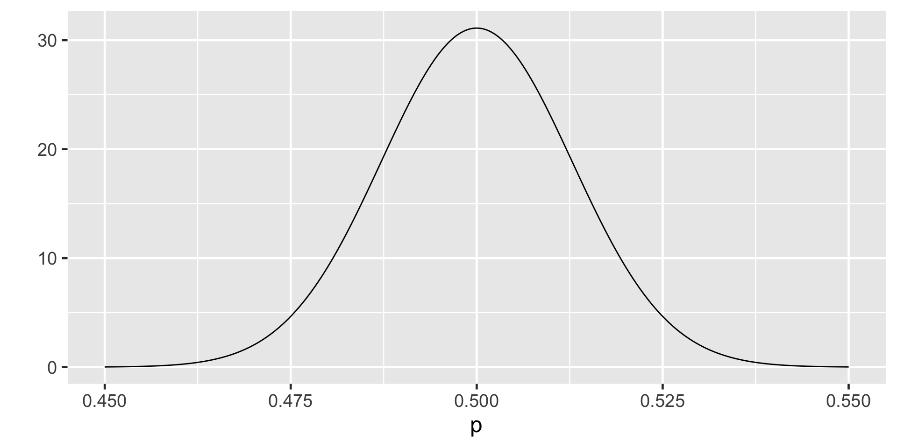
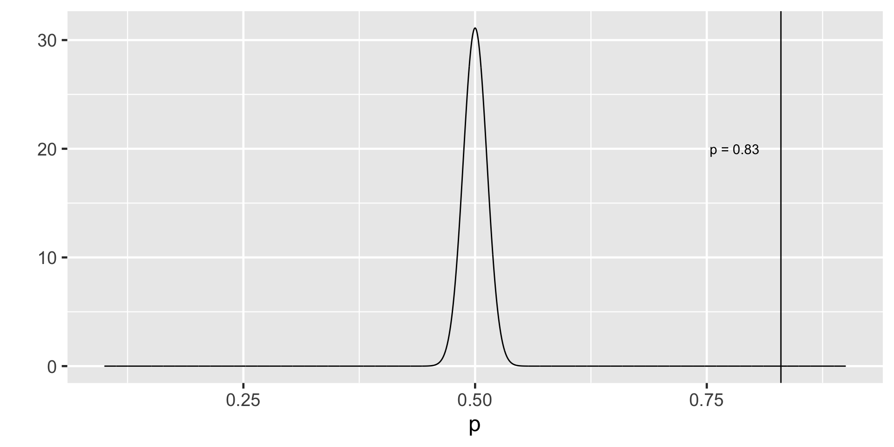
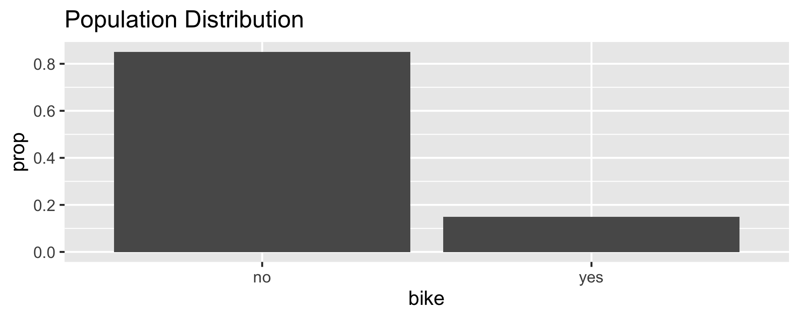
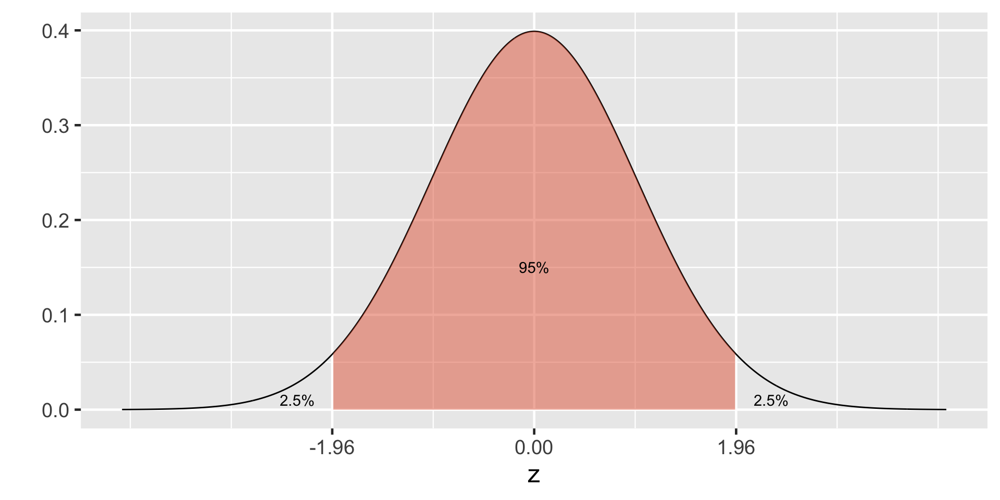
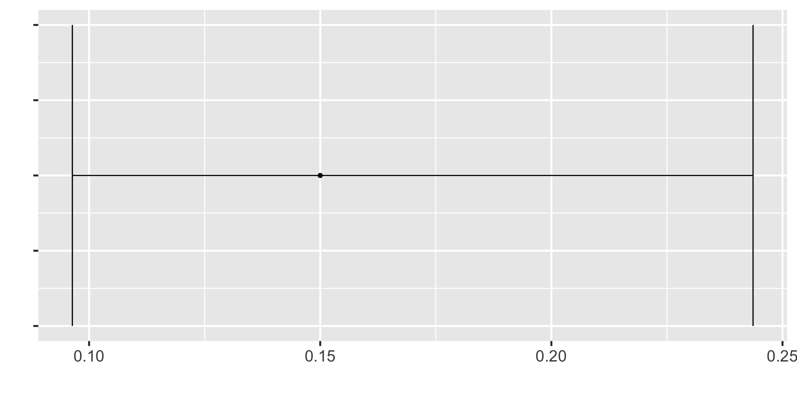
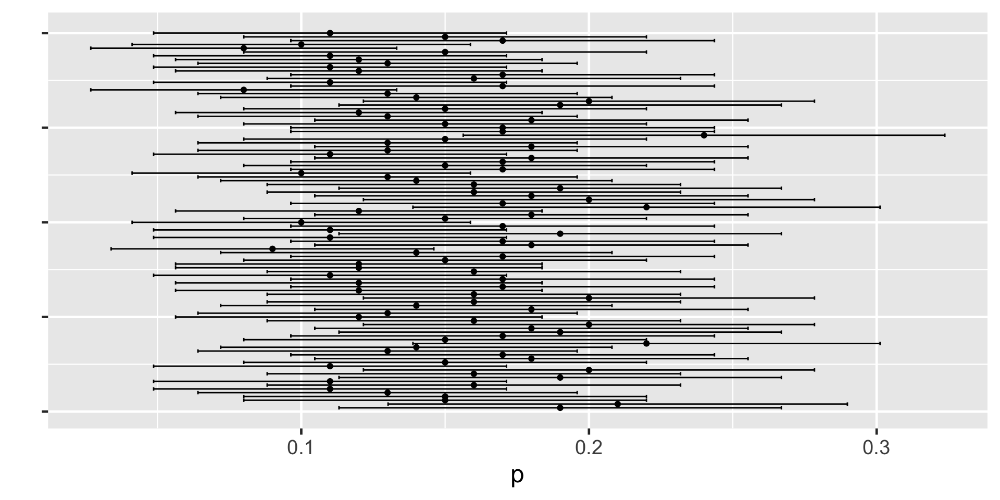
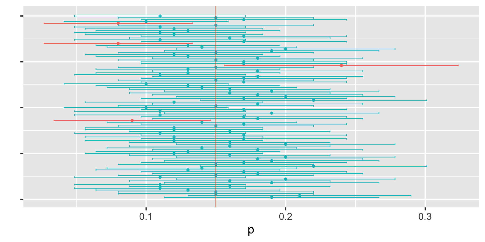

[1] 2.594241e-146Inference: frequentist vs. Bayesian
Day 5
“Statistical inference”
Hypothesis Testing a la frequentist
Confidence Intervals
Hypothesis Testing a la Bayes
Credible Intervals
Resources
Frequentist examples are from stats4cs.com
Bayesian examples are from Bayes Rules! Section 8.2
Frequentist Inference
Research Question
Are there any pink cows in the world?
Hypotheses
Null hypothesis: There are no pink cows in the world.
Alternative hypothesis: There is a pink cow in the world.
Hypothesis Testing Procedure
We go looking for evidence against the null.
If we find any evidence against the null (a single pink cow) then we say we reject the null hypothesis.
If we do not find any evidence against the null (a single pink cow) then we fail to reject the null. We can keep searching for more evidence against the null (i.e. continue looking for a pink cow). We will never be able to say the null is true so we never accept the null. All we can do is keep looking for a pink cow.
Research Question
Is there a foreign object in the cat’s body?
Hypothesis Testing
Null hypothesis: There is no foreign object in the cat’s body.
Alternative hypothesis: There is a foreign object in the cat’s body.
Collect Evidence
X-ray
Conclusion and Decision
X-ray does not show any foreign object.
- Fail to reject the null hypothesis.
- We cannot conclude the null hypothesis is true. We cannot accept the null hypothesis.
Review of Hypothesis Testing
We assume that the null hypothesis is true.
We look for evidence against the null.
If we find any evidence against the null (e.g. a single pink cow) then we can say we reject the null hypothesis.
If we do not find any evidence against the null (a single pink cow) then we fail to reject the null. We can keep searching for more evidence against the null (i.e. continue looking for a pink cow). We will never be able to say the null is true so we never accept the null. We fail to reject the null. All we can do is keep looking for a pink cow.
We are searching for evidence against the null. We are searching for samples that are significantly different than the null.
Research Question
Do the majority of Americans approve allowing DACA immigrants to become citizens? Survey about this topic can be found here
Hypotheses
\(H_0: \pi = 0.5\)
\(H_A: \pi \neq 0.5\)
Assuming Null is True
Recall that according to CLT \(p \sim \text{approximately }N(\pi, \frac{\pi(1-\pi)}{n})\)
If \(H_0: \pi = 0.5\) then the null sampling distribution would be \(N(0.5, \frac{0.5(1-0.5)}{n})\)
Looking for Evidence
According to a Gallup survey of 1520 US adults , 83% approve of allowing DACA immigrants to become citizens.
\(p = 0.83\)
\(n = 1520\)
We said that the null sampling distribution would be \(N(0.5, \frac{0.5(1-0.5)}{n})\) which is
\(N(0.5, \frac{0.5(1-0.5)}{1520})\)
\(N(0.5, 0.0001644737)\)
The \(H_0\) Sampling Distribution
What counts as evidence against the null?
Any sample proportion that falls of really far away from the center of the distribution would count as an evidence against the null.
If the null is true, then it would be unlikely to observe extremely high or low sample proportions.
Sampling Distribution
We want to know the probability of observing an extreme sample proportion like ours (p = 0.83) if the \(H_0\) were true.
If our sample proportion is “extreme” then so is 0.90, 0.91, 0.917, 0.9273423 etc.
Our sample proportion is 0.83 - 0.5 = 0.33 units away from the null.
So we will consider 0.5 - 0.33 = 0.17 also an “extreme” sample proportion.
This makes 0.16, 0.1512, 0.11… also “extreme”

If the \(H_0\) is true what is the probability that we will observe an extremely high or an extremely low sample proportion?
Probability of observing sample proportion of 0.17 and lower
Probability of observing sample proportion of 0.83 and higher
p-value
Adding those up (or you can multiply one of them with 2) we have
pnorm(0.17, mean = 0.5, sd = 0.01282473) +
pnorm(0.83, mean = 0.5, sd = 0.01282473,
lower.tail = FALSE)[1] 5.188482e-146p-value = \(5.188482 \times 10^{-146}\)
P-value is the probability of observing a sample statistic at least as extreme as the one that has been observed if the null hypothesis were true.
Remembering CLT
Let \(\pi\) represent the proportion of bike owners on campus then \(\pi =\) 0.15.
Getting to sampling distribution of single proportion
\(p_1\) - Proportion of first sample (n = 100)
[1] 0.17\(p_2\) -Proportion of second sample (n = 100)
[1] 0.12\(p_3\) -Proportion of third sample (n = 100)
[1] 0.14Sampling Distribution of Single Proportion

If certain conditions are met then
\[p \sim \text{approximately } N(\pi, \frac{\pi(1-\pi)}{n})\]
In Reality
- We only have one sample and thus one point estimate of the population parameter. How can make use of it?
- First we will assume the sample proportion is the best thing we have at hand and use it as a point estimate of the population proportion.
- Second, even though we embrace the sample proportion as a point estimate of the population proportion, we will need to acknowledge that it has some error.
Standard Error
\(p \sim \text{approximately } N(\text{mean} = \pi, \text{sd} = \sqrt{\frac{\pi(1-\pi)}{n}})\)
We call the standard deviation of the sampling distribution standard error of the estimate.
Standard error of single proportion is \(\sqrt{\frac{p(1-p)}{n}}\).
Confidence Interval
CI = \(\text{point estimate} \pm \text { margin of error}\)
CI = \(\text{point estimate} \pm \text { critical value} \times \text{standard error}\)
CI for single proportion = \(p \pm \text {critical value} \times \text{standard error}\)
CI for single proportion = \(p \pm \text {critical value} \times \sqrt{\frac{p(1-p)}{n}}\)
95% CI for single proportion = \(p \pm 1.96 \times \sqrt{\frac{p(1-p)}{n}}\) because …
95% of the data falls within 1.96 standard deviations in the normal distribution.
How do we know that?
95% CI for the first sample
Recall \(p = 0.17\) and \(n = 100\)
95% CI for single proportion = \(p \pm 1.96 \times \sqrt{\frac{p(1-p)}{n}}\)
95% CI = \(0.17 \pm 1.96 \times \sqrt{\frac{0.17(1-0.17)}{100}}\)
95% CI = \(0.17 \pm 1.96 \times 0.03756328\)
95%CI = \(0.17 \pm 0.07362403\)
95%CI = (0.09637597, 0.243624)
95% CI for the first sample
95%CI = (0.09637597, 0.243624)
Understanding Confidence Intervals
I have taken 100 samples with \(n = 100\), calculated the sample proportion, standard error, and 95% CI interval for each sample
# A tibble: 100 × 4
p SE lower_bound upper_bound
<dbl> <dbl> <dbl> <dbl>
1 0.19 0.0392 0.113 0.267
2 0.21 0.0407 0.130 0.290
3 0.15 0.0357 0.0800 0.220
4 0.15 0.0357 0.0800 0.220
5 0.13 0.0336 0.0641 0.196
6 0.11 0.0313 0.0487 0.171
7 0.16 0.0367 0.0881 0.232
8 0.11 0.0313 0.0487 0.171
9 0.19 0.0392 0.113 0.267
10 0.16 0.0367 0.0881 0.232
# ℹ 90 more rowsUnderstanding Confidence Intervals
Understanding Confidence Intervals
From Wikipedia
The confidence interval can be expressed in terms of a long-run frequency in repeated samples (or in resampling): “Were this procedure to be repeated on numerous samples, the proportion of calculated 95% confidence intervals that encompassed the true value of the population parameter would tend toward 95%.”
The confidence interval can be expressed in terms of probability with respect to a single theoretical (yet to be realized) sample: “There is a 95% probability that the 95% confidence interval calculated from a given future sample will cover the true value of the population parameter.” This essentially reframes the “repeated samples” interpretation as a probability rather than a frequency.
From Wikipedia
- The confidence interval can be expressed in terms of statistical significance, e.g.: “The 95% confidence interval represents values that are not statistically significantly different from the point estimate at the .05 level.”
Bayesian Inference
Rows: 100
Columns: 10
$ artist <fct> Ad Gerritsen, Kirstine Roepstorff, Lisa Baumgardner,…
$ country <fct> dutch, danish, american, american, american, canadia…
$ birth <fct> 1940, 1972, 1958, 1952, 1946, 1927, 1901, 1941, 1920…
$ death <fct> 2015, NA, 2015, NA, NA, 1966, 1971, NA, 2007, NA, NA…
$ alive <lgl> FALSE, TRUE, FALSE, TRUE, TRUE, FALSE, FALSE, TRUE, …
$ genx <lgl> FALSE, TRUE, FALSE, FALSE, FALSE, FALSE, FALSE, FALS…
$ gender <fct> male, female, female, male, male, male, male, male, …
$ count <int> 1, 3, 2, 1, 1, 8, 2, 1, 1, 5, 1, 2, 1, 1, 21, 16, 1,…
$ year_acquired_min <fct> 1981, 2005, 2016, 2001, 2012, 2008, 2018, 1981, 1949…
$ year_acquired_max <fct> 1981, 2005, 2016, 2001, 2012, 2008, 2018, 1981, 1949…\[Y|\pi \sim \text{Bin}(100, \pi)\]
\[\pi \sim \text{Beta}(4, 6)\]
\[\begin{split} Y | \pi & \sim \text{Bin}(100, \pi) \\ \pi & \sim \text{Beta}(4, 6) \\ \end{split} \;\;\;\; \Rightarrow \;\;\;\; \pi | (Y = 14) \sim \text{Beta}(18, 92)\]
95% Posterior Credible Interval (CI)
0.025th & 0.975th quantiles of the Beta(18,92) posterior
\(\int_{0.1}^{0.24} f(\pi|(y=14)) d\pi \; \approx \; 0.95\)
\[\begin{split} H_0: & \; \; \pi \ge 0.20 \\ H_a: & \; \; \pi < 0.20 \\ \end{split}\]
\[\text{Posterior odds } = \frac{P(H_a \; | \; (Y=14))}{P(H_0 \; | \; (Y=14))} \approx 5.62 \]

\[P(\pi<0.20)\]
The Bayes Factor (BF) compares the posterior odds to the prior odds, hence provides insight into just how much our understanding about Gen X representation evolved upon observing our sample data:
\[\text{Bayes Factor} = \frac{\text{Posterior odds }}{\text{Prior odds }}\]
Bayes Factor
In a hypothesis test of two competing hypotheses, \(H_a\) vs \(H_0\), the Bayes Factor is an odds ratio for \(H_a\):
\[\text{Bayes Factor} = \frac{\text{Posterior odds}}{\text{Prior odds}} = \frac{P(H_a | Y) / P(H_0 | Y)}{P(H_a) / P(H_0)} \; .\]
As a ratio, it’s meaningful to compare the Bayes Factor (BF) to 1. To this end, consider three possible scenarios:
- BF = 1: The plausibility of \(H_a\) didn’t change in light of the observed data.
- BF > 1: The plausibility of \(H_a\) increased in light of the observed data. Thus the greater the Bayes Factor, the more convincing the evidence for \(H_a\).
- BF < 1: The plausibility of \(H_a\) decreased in light of the observed data.
Two-sided Tests
\[\begin{split} H_0: & \; \; \pi = 0.3 \\ H_a: & \; \; \pi \ne 0.3 \\ \end{split}\]
\[\text{Posterior odds } = \frac{P(H_a \; | \; (Y=14))}{P(H_0 \; | \; (Y=14))} = \frac{1}{0} = \text{ nooooo!}\]
library(rstan)
# STEP 1: DEFINE the model
art_model <- "
data {
int<lower=0, upper=100> Y;
}
parameters {
real<lower=0, upper=1> pi;
}
model {
Y ~ binomial(100, pi);
pi ~ beta(4, 6);
}
"
# STEP 2: SIMULATE the posterior
art_sim <- stan(model_code = art_model, data = list(Y = 14),
chains = 4, iter = 5000*2, seed = 84735,
refresh = FALSE)
\[\begin{split} H_0: & \; \; \pi \in (0.25, 0.35) \\ H_a: & \; \; \pi \notin (0.25, 0.35) \\ \end{split}\]
exceeds n percent
FALSE 3079 0.15395
TRUE 16921 0.84605a Bayesian analysis assesses the uncertainty regarding an unknown parameter \(\pi\) in light of observed data \(Y\).
\[P((\pi < 0.20) \; | \; (Y = 14)) = 0.8489856 \;.\]
a frequentist analysis assesses the uncertainty of the observed data \(Y\) in light of assumed values of \(\pi\).
\[P((Y \le 14) | (\pi = 0.20)) = 0.08\]